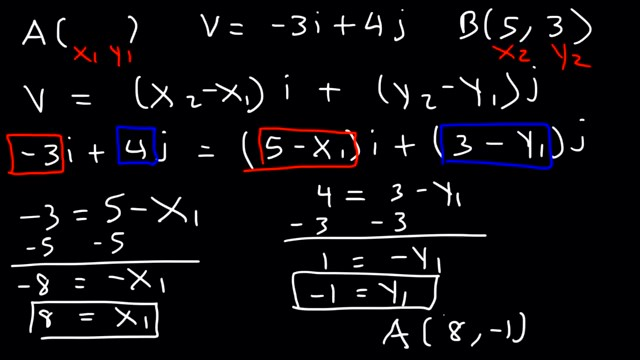

In this section I will speak about vectors, don't expect me to explain everything correctly, many of the words I'm gonna use were unknown to me till today, because english isn't my native language, I have to use english sources however to study stuff because there aren't many good videos or articles out there written in my language.
First, let's understand the difference between a scalar quantity and a vector quantity, a scalar quantity has magnitude only, while a vector quantity has magnitude and direction. For example, mass is a scalar quantity, while force is a vector quantity, you can't say an object has 30kg mass towards east, but you can say you are moving a object with a force of 200N towards north.
Let's now say we have a point A(1, 2) and B(4, 6), how do we find the magnitude of the vector AB? We can easily do this like this:
So, all you need to remember is that Vx = x2 - x1 and Vy = y2 - y1, after that to find the magnitude of a vector you simple do |v| = square of Vx^2 + Vy^2
What if you know the vector AB and point A but not point B? You could find point B like this:
Notice something? Bx = Ax + Vx and By = Ay + Vy!
If we knew point B but not point A then we could find point A like this:
Notice something? Ax = Bx - Vx and Ay = By - Vy!
Alright, so now, how could we find the angle of a vector? Here is how we do it:
To actually find tan^-1(6/4) you need to use a calculator, the result will be the degrees. So by knowing the Vx and Vy we can find the angle of the vector, something I actually needed for a project I wanted to make, I wanted to make a div rotate based on the position of the cursor, so if the div is the point A and the cursor is the point B now I know how I can calculate the degrees as the cursor moves.
A problem appears when Vx < 0 however, doing tan^-1(Vy/Vx) will give us the angle messured from the negatice x axis, if we wanted to get the angle messured from the positive x axies we would simple have to do 180 - tan^-1(Vy/Vx), like in the image below:
But doing this for all 4 cases possible (up right, up left, down right, down left) would be very time consuming in programming, and that's where the Math.atan2(Vx, Vy) property comes to make our lives easier:
The math.atan2(Vx, Vy) method messures the angle from the positive x axis to the negative x axis whenever the Vy is positive, else if it is negative it will do the same but the angle that is returned will be negative, and it will again be messured from the positive x axis to the negative x axis like this:
Let's think about a few basic collisions involving an elephant and myself. Supposed I'm standing still (valocity = 0) and an elephant runs directly into me. What will happen to me? In particular, what will happen to my valocity? And what will happen to the elephant's valocity? If I run directly into a stationary elephat (valocity = 0) what will happen to my valocity? And what will happen to the valocity of the elephant who's valocity was 0? An elephant and I run straight at one another, what happens to our valocities? An elephant is chasing me, and hits me while we both run towards the same direction, because his valocity is heigher, how will our valocities interact? Those are some problems we are going to learn how to solve in this section.
We'll get the answers for the pop quiz, but first let me introduce the term momentum, which is rather valued commodity in the world of physics. Momentum (generally abbreviated as P) is defined to be the mass of an object multiplied by the valocity of the object. This can be written as:
Momentum can be large or small, as well as positive or negative. This is known as a vector, it has a magnitude (size), and a direction. Valocity is also a vector (i.e. I'm driving North at 55 miles per hour). In Equation 1 the vector is indicated by the small line above P and v. Mass is not a vector (it only has a magnitude, not a direction).
In a collision, the momentum of a system is conserved (i.e. the total momentum of the system is the same after the collision as it was before the collision). A system consists of the two particles that are colliding. We can write this as:
Where the i and f indicate initial and final (recall the P is momentum).
Here are several examples of momentum:
For question 1, I think that if an elephant ran directly in to me while I had a valocity of 0 I would probably go flying backwards, and the elephant wouldn't really notice the collision. There are two things in our system, the elephant and me. I am not moving, so my momentum is 0. The elephant is running at me, let's say the elephant is moving with a valocity of 5 m/s, and has a mass of 1000 kg. The initial momentum of the system = Pme + Pelephant = 0 + 5000 = 5000 (the total mementum before the collision).
After the collision the total momentum must be equal to 5000 due to the Law of Momentum Conservation. Since I think I will be moving with a high valocity to the right I can say that I have some positive momentum which is greater than my initial momentum of zero. Thus, the elephant must now have less momentum (it got slowed down a bit when it collided with me). How much did it slow down? And how much did I speed up? To answer those questions we need to introduce one more physics term, which is Energy.
The term energy is used in many ways ranging from people showing up for work on Monday morning saying "I have no energy", to chemists discussing the energy levels of a newly discovered element. For introductory physics (and this section) we only need to know about kinetic energy (KE), which is often referred to as the energy of motion. If something is moving, it has kinetic energy, and if it is not moving it has no kinetic energy. It is defined as:
Where m is the mass of the particle, and v is the velocity of the particle. Kinetic energy is not a vector (it can be large or small, but does not have a direction associated with it). In an elastic collision the kinetic energy is conserved: the initial kinetic energy of the system is equal to the final kinetic energy. We now have two conservation equations that will let us determine the final velocities and masses.
So far, we know that Pi = Rf and KEi = KEf, so from that we get those two equations we can use to find the final velocities:
By doing a bit of algebra using those two equations, we can find that the final velocities of the particles can also be given by:
So, with this equations I created, as long as I know the initial valocities and masses of my particles I can now easily determine their final valocities after they collide.
I will now attempt to find out what a collision between me and an elephant would look like using JavaScript, since 1000kg is kind of a lot let's use a smaller elephant with half the mass of the previous one to keep the velocities in a speed that gives us time to observe (you can click the canvas to restart the animation):
JavaScript Code:
let canvas = document.getElementById('canvas1'); let c = canvas.getContext('2d'); canvas.width = 500; canvas.height = 200; function getDistance(x1, x2){ return Math.abs(x2 - x1); } let v2, v1, m2, m1, x1, x2; let rect = function(x, y, w, h, cl, velocity, m){ this.x = x; this.y = y; this.w = w; this.h = h; this.cl = cl; this.m = m; this.velocity = velocity; this.draw = function(){ c.fillStyle = this.cl; c.fillRect(this.x, this.y, this.w, this.h); c.font = 'normal 20px Arial' c.fillStyle = 'white'; c.textAlign = 'center'; c.fillText(this.velocity, this.x + this.w / 2, this.y + this.w /2) } this.update = function(otherParticle){ let distance = getDistance(this.x + this.w / 2, otherParticle.x + otherParticle.w / 2); if(distance < this.w / 2 + otherParticle.w / 2){ let v2 = otherParticle.velocity; let v1 = this.velocity; let m2 = otherParticle.m; let m1 = this.m; let x1 = this.x; let x2 = otherParticle.x; let xVelocityDiff = v1 - v2; let xDist = x2 - x1; if(xDist * xVelocityDiff >= 0){ setTimeout(() => { this.velocity = (m1 - m2) / (m1 + m2) * v1 + (2 * m2) / (m1 + m2) * v2; }, 1); } } this.x += this.velocity; this.draw(); } } let elephant; let me; function int(){ elephant = new rect(50, 50, 100, 140, 'blue', 5, 500); me = new rect(300, 118, 50, 70, 'orange', 0, 100); } int(); canvas.addEventListener('click', int); function animate(){ c.fillStyle = 'black'; c.fillRect(0, 0, canvas.width, canvas.height); me.update(elephant); elephant.update(me); requestAnimationFrame(animate); } animate();
Outcome:
So, why did I add that if statement that checks if xValocityDiff * xDist >= 0? I added it to fix some bugs, so, to understand it, let's analyze in which cases can the condition be true, for the condition to be true, either xDist and xVelocityDigg will both be negative, or both will be positive. Which means, v1 - v2 and x2 - x1 should either both be positive numbers or negative for the codition to be true.
Alright, so, if the particles are heading towards each other, then they will collid head to head. In that case, for one of the two particles xDist is negative, more specifically, for the particle at the right xDist is negative, so for it to collid, xVelocityDiff = v1 -v2 should also be negative, v1 will be negative since it's moving west, and v2 will also be negative since it's moving east but multiplied with -, therefore, in that case, xValocityDiff is negative too, so the collision occurs, the collision will also occur for the left particle, with bot xVelocityDiff and xDist being positive.
What if both particles headed east? But the left particle had higher velocity? For the particle at the right, xDist would be negative, and xVelocityDiff would also have to be negative, since to v2 would be heigher from v1 for them to collid. For the particle at the left, xDist would be positive, and xVelocityDiff would also be positive.
So, we have explored the posibility of the two particles moving towards each other, and the posibility of the two particles moving towards the same direction, and we have came to one conclusion, for the right particle, both xVelocityDiff and xDist should be negative and for the left particle both xVelocityDiff and xDist should be positive, so that brings us to the final question, why is that peace of code necessary? How does it fix any bugs?
The bug that would sometimes occur was that the two particles would get stuck together, that bug from what I understand occured because of the colission code. When the practicles collided some times they would go through each other just a little, and because of that, the condition that checks if the particles collid would run twice, after running the code for the second time though, their velosities would return to their original, so they would collid again, and that process would go on again and again making them get stuck together. This problem was solved by the second codition, because now it also checks their velosities, if after the collision they both continue heading east, then the particle at the right should have heigher velocity, it's only logical it will, so since it will have heigher velocity, the xVelocityDiff will become positive, and the colission will not occur twice, that's the explanation I came up with at least.
Lastly, why did I add the setTimeout() at the end? I did that because when the velosity of one particle was 0, when colission occured, after the first iteration through the code of the first particle occured the particle that would run it's code first, would change velocity before the second particle's code runs, this may be a matter of miliseconds but a problem would occur, in which case when the second's particle code ran the distance between them wasn't less than 0 anymore, therefore the collision codition wouldn't come true, the setTimeout will wait for 1 milisecond before changing the velocity, and just like that I fixed the issue.
Anyway, I really recommend checking out my canvas notes to better understand the code above, I'm not doing an overall explanation of the code because the structure of the code is similar to many others I have made and explained in my canvas notes, I'm only going to focus on collisions in this section.
So, before we learned how to find the final valocities when two particles collid on the x axis, if however we have two particles moving in both x and y dimensions, then when they collid like in the picture, what happens?
The equation 5 will not work, because the collision has an angle, to find their final velocities we should first get the angle that the vector from one's particle center to the other forms, I talked about how this is done before in this page when I talked about vectors.
So, we have two points, to get the angle of the vector, we first should find the Vx, and Vy. To find Vx we do x2 - x1, to find Vy, we do y2 - y1, after we have those, to get the angle, we do Math.atan2(Vy, Vx). However, we will also multiple the angle we get with - to make it negative, why is that? Because we will then use this to rotate the angle, if the angle it gave us was -90 it's logical we are gonna want to rotate it 90 degrees in order to make the line verticle.
I'm not gonna go in much details about why, but to get the points of a rotated axis by an angle of θ, you can use the following equations:
Alright, so, since it's the velocities we want to change, those will be the (x, y) points we are gonna use the angle on, for example, we have a velocity object, like this one: velocity = {x: 5, y: 3}, and the angle we got was -0.7 radians, to rotate the points we will do velocity.x = velocity.x * Math.cos(-45) - velocity.y * Math.sin(-45) and velocity.y = velocity.x * Math.sin(-0.7) + velocity.y * Math.cos(-0.7). Here you can see a picture that demostrates the process I just explained:
function rotate(velocity, angle){
velocity.x = velocity.x * Math.cos(angle) - velocity.y * Math.sin(angle);
velocity.y = velocity.x * Math.sin(angle) + velocity.y * Math.cos(angle);
}
let angle = - Math.aton2(otherParticle.y - thisParticle.y, otherParticle.x - thisParticle.x);
let v1 = rotate(thisParticle.velocity, angle);
let v2 = rotate(otherParticle.velocity, angle);
Now that we rotated them, we are able to use the equation 5 on them to get their new velocities, we only need to change the x velocities, since they are colliding on the x axis. Here is a picture of the particles after we change their velocities:
v1 = { x: u1.x * (m1 - m2) / (m1 + m2) + u2.x * 2 * m2 / (m1 + m2), y: u1.y };
v2 = { x: u2.x * (m1 - m2) / (m1 + m2) + u1.x * 2 * m2 / (m1 + m2), y: u2.y };
So now, since we have determined the final velocities of our particles, all that's left is to rotate back the points, we can do this by using the opposite angle we used before, so if before we used -0.7 radians, if we now use -1 * (-0.7) = 0.7 it's going to rotate them back to their original state:
let finalV1 = rotate(v1, -angle);
let finalV2 = rotate(v2, -angle);
thisParticle.velocity.x = finalV1.x;
thisParticle.velocity.y = finalV1.y;
otherParticle.velocity.x = finalV2.x;
otherParticle.velocity.y = finalV2.y;
JavaScript Code:
let canvas = document.getElementById('canvas2'); let c = canvas.getContext('2d'); canvas.width = 500; canvas.height = 300; function getDistance(x1, y1, x2, y2){ let Vx = x2 - x1; let Vy = y2 - y1; return Math.hypot(Vx, Vy); } let circle = function(x, y, r, dx, dy, cl, m){ this.x = x; this.y = y; this.r = r; this.dx = dx; this.dy = dy; this.cl = cl; this.m = m; this.draw = function(){ c.fillStyle = this.cl; c.beginPath(); c.arc(this.x, this.y, this.r, 0, 2 * Math.PI); c.stroke(); c.fill(); c.font = 'normal 20px Arial'; c.fillStyle = 'white'; c.textAlign = 'center'; c.fillText(`dx: ${this.dx}`, this.x, this.y); c.fillText(`dy: ${this.dy}`, this.x, this.y + 22); } this.update = function(otherParticle){ let distance = getDistance(this.x, this.y, otherParticle.x, otherParticle.y); if(distance < this.r + otherParticle.r){ let v1 = {x: this.dx, y: this.dy}; let v2 = {x: otherParticle.dx, y: otherParticle.dy}; let x1 = this.x; let y1 = this.y; let m1 = this.m; let x2 = otherParticle.x; let y2 = otherParticle.y; let m2 = otherParticle.m; let xVelocityDiff = v1.x - v2.x; let yVelocityDiff = v1.y - v2.y; let xDist = x2 - x1; let yDist = y2 - y1; // Prevent accidental overlap of particles if(xVelocityDiff * xDist + yVelocityDiff * yDist >= 0){ // Grab angle between two colliding particles const angle = -Math.atan2(y2 - y1, x2 - x1); let rotate = function(velocity, angle){ let rotatedVelocities = { x: velocity.x * Math.cos(angle) - velocity.y * Math.sin(angle), y: velocity.x * Math.sin(angle) + velocity.y * Math.cos(angle) } return rotatedVelocities; }; // Rotates axes const rotatedV1 = rotate(v1, angle); const rotatedV2 = rotate(v2, angle); // Calculates their final velocities const u1 = {x: rotatedV1.x * (m1 - m2) / (m1 + m2) + rotatedV2.x * 2 * m2 / (m1 + m2), y: rotatedV1.y}; const u2 = {x: rotatedV2.x * (m1 - m2) / (m1 + m2) + rotatedV1.x * 2 * m2 / (m1 + m2), y: rotatedV2.y}; // rotates the axes for the final velocities calculated before back to their original angle const finalV1 = rotate(u1, -angle); const finalV2 = rotate(u2, -angle); // changes the dx and dy to the final velocities otherParticle.dx = finalV2.x; otherParticle.dy = finalV2.y; this.dx = finalV1.x; this.dy = finalV1.y; } } // Prevents particles from passing the edges of the canvas if(this.x + this.r > canvas.width){ this.dx = (this.dx < 0)? this.dx: -this.dx; } else if(this.x - this.r < 0){ this.dx = Math.abs(this.dx); } if(this.y + this.r > canvas.height){ this.dy = (this.dy < 0)? this.dy: -this.dy; } else if(this.y - this.r < 0){ this.dy = Math.abs(this.dy); } // increases/decreases x and y this.x += this.dx; this.y += this.dy; this.draw(); } } let particle1, particle2; function int(){ particle1 = new circle(300, 60, 50, -3, 3, 'red', 1); particle2 = new circle(100, 200, 50, 2, -2, 'blue', 1); } int(); canvas.addEventListener('click', (e) => { int(); }); function animate(){ c.fillStyle = 'black'; c.fillRect(0, 0, canvas.width, canvas.height); particle1.update(particle2); particle2.update(particle1); requestAnimationFrame(animate); } animate();
Outcome:
Want to learn how to detect collision for multiple circles? And how to randomly position them on the canvas without overlapping? Check my collision lesson in my canvas notes for more information.